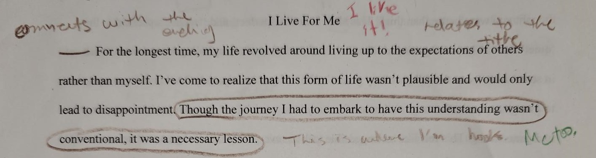
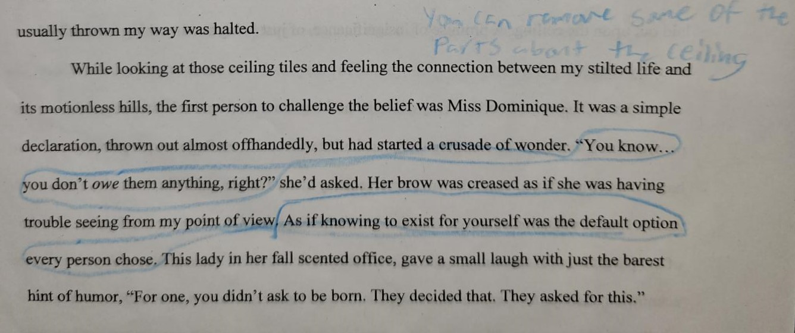

I Live For Me
- Polished
- Rough
- Techniques
Polished Draft

This essay explores the origin and significance of a belief shaped by various journeys and battles with mental health. It examines the challenges posed by societal expectations, mental well-being, and the evolution of self-perception. Using metaphors of paintings, it illustrates a journey of self-love and acceptance.
For the longest time, my life revolved around living up to the expectations of others rather than myself. I'd come to realize that this form of life wasn't plausible and would only lead to disappointment. Though the journey I've had to embark to have this understanding wasn't conventional, it was a necessary lesson of self-acceptance and appreciation.
For the beginning years, I was a happy child who loved school and learning. My assignments were returned bearing bright red 'A+'s, and little smiley faces drawn in the corners. The teachers would say to me, "You must make your parents so proud!" I'd fill up with pride as they'd pat my back and give a positive call home. When I'd use good manners out in public the adults would say, "Your parents raised you so well!" or "If this is how you are, I'd love to meet your parents!" They always called me a 'shining star', but not in the sense of producing my own light. More as a moon, reflecting the brilliance of the real star and only basking in its borrowed glory.
As a child, the cause of the praise didn't matter, either produced or given, light is light. Whether someone looks at me for something I have done or because of how I represent my parents, matters none. Praise was praise, and I continually echoed in my mind, 'My parents must be so proud,' like a constant, reassuring mantra that played in the background of my thoughts.
I was simply of my parents and was content with that. So, when it did happen, and the smiles slid off everyone's faces, the letters were bright red 'F's with frowny faces in the corners, I was acutely aware of the shift and what it meant.
Instead of the teacher's praise, it was, "Is this how your parents raised you?" or "I thought you were better than this." This shift from the 'perfect' and 'teacher's pet' kid to the 'quiet' and 'let her be, I guess' kid formed the foundation of my spiraling mental state. It felt set in stone then; I was the failure of my parent's life. As I'd changed so significantly in such a short amount of time, everyone noticed. My middle-school teachers saw when I could no longer concentrate on doing my homework, and they saw when I'd finally stopped bothering to try at all. My high-school teachers saw when I could no longer sit in a classroom with the other students, and they saw when I'd given up and then stopped attending. I'd shifted from the bright child who got all 'A's and never had to attend summer school, to the failing child who couldn't even be graded and had to attend court.
My parents were never the type to require an abundance of discipline and success, but it was expected of me. Because that's what I did, it was who I was. I was the child whose report card they didn't have to check and whose parent teacher conferences they didn't have to attend. Seeing how bad I'd gotten and living through everyone's anguished faces, I began to despise myself. The only requirement my parents ever gave me was to "Just try," and "Live and enjoy life," and I couldn't even do that. I'd gotten it into my head that it was up to me to avenge my parents' image and name from my own tarnish by doing away with everything that had gone wrong. This felt like an impossible task as 'everything that had gone wrong' seemed to be every piece of my being. Everything I had grown into as a young adult was wrong and caused undue hardship to my parents, teachers, and fellow classmates. They deserved better, and I continually chanted, 'Momma's sacrificed so much,' like a constant, war-cry that'd become the theme song of my days. I had to fix it; I couldn't live with myself knowing the burden I was on everyone. After exhaustively exploring every possible solution to just fix myself, and finding no lasting resolutions, I resigned myself to a life of emptiness and made the difficult decision to distance myself from family and any other possibility of kinship.
To me, it was a normal thought process, one that I'd believed everyone held: 'You live for your parents, your existence costs them years of money, time, and energy. Show them how sorry you are. Get rich and buy them a house.' The challenges to this belief came in unlikely ways and from unexpected places. In the heat of it all, one shining beacon of hope amidst the darkness of the lowest moments of one's life—a hospital.
It wasn't a happy place, but a necessary one. The whole building smelled of stale cleaning supplies and years old urine that'd seeped into unreachable nooks and crannies. There were murals painted onto the ceiling, most chipped and some unintelligible. They held words of hope and encouragement, Bible verses, brightly colored paintings of hills and suns. The illusion of healing, now forgotten and dull after their placement a few years before. No one upkept or attempted to preserve them, and other than the small and heartless reprimands to those who'd climbed the chairs to reach, no one paid them any mind. In that heartless building, with its steel gates and locked doors, the other children and I were taught, we were not to touch the hard work of others. Don't throw things at them, don't rub them, don't touch it, because we'd break it.
I felt similar to those ceiling tiles, in the fact that I was also just the product of another that should not be touched, especially by my own hands. To add anything of myself would be to ruin it, to cause irreparable damage and trouble. That ceiling, with its shift from beauty to ruin and no hope of renewal, was a significant reminder of my own position. Trip after trip, the ceiling and I stayed the same—no additions, no removals, and no improvements. We were alike in being frozen in time. Doing nothing other than desperately wishing for someone to redo us, but knowing we could only wait for someone to destroy us.
When someone's hands were caught nearing the painted ceiling, we were quick to apologize and resume our seats after the adults would quip, "Hey, do you know how dirty your hands are?" or "Stop touching the ceiling, they worked very hard on those." They said it as if our hands were the cause of the decay instead of the mere presence of time. It felt foreboding, a fortune being laid out upon the ceiling. A promise of insignificance, of just being another thing to be wilted away by time.
For a long time, I believed myself to be nothing more than a mural. An image of a person's hard work, left on a ceiling to be gawked at once and then forgotten. A painting my hands should not touch, lest I chip and smudge away at my mother and father's hard work. Aren't I just a reflection of my parents' hard work? Everything I do, every move I make, an echo of my parents' sacrifices and struggles. To be as I am, to exist as I do, is a shameful acknowledgment of my parents' trials. My parents, the people that went from trailers and sickly apartments to a beautiful house with a beautiful family. My mother, a magical and mesmerizing woman that's gone through each and every trial with a smile on her face, daily prayers, and a blessing ready to be uttered. My inability to be successful, to "Just try," and "Live and enjoy life," was a mere mockery of the lives they'd built themselves.
It is true that lessons on the self and its place among others are quickly learned and understood within those early ages of life. Some are taught that they are the beginnings of a beautiful multidimensional art. Free to enhance and grow as they please, because they are not the result of completed art, but the foundations and tools to create it. Others are taught they are nothing more than a mere vessel carelessly placed on land to please others. They grow to understand they are the display for their parents' completed art, and they are not to change or modify anything lest they break it.
I was there again and again, in that hospital and in the all-encompassing darkness and helplessness that depression gave me. It wasn't until my last time there that something changed. From a simple offhand comment, I realized something that is now a core philosophy of my life.
At almost eighteen, it seemed every plan I had finally gotten the courage to make was crushed. I wasn't supposed to be there again, neither the physical nor mental place—not that time nor the time before that. The first time was supposed to be the last time I stepped foot into that building. Failures in each aspect of my life seemed to happen at each and every corner. Every person in my life seemed to be coming to reluctant terms with the fact that I was in a downward decline and every optimistic expectation that was usually thrown my way was halted.
While looking at those ceiling tiles and feeling the connection between my stilted life and its motionless hills, the first person to challenge the belief was Miss Dominique. It was a simple declaration, thrown out almost offhandedly, but had started a crusade of wonder. "You know… you don't owe them anything, right?" she'd asked. Her brow was creased as if she was having trouble seeing from my point of view. As if knowing to exist for yourself was the default option every person chose. This lady in her fall scented office, gave a small laugh with just the barest hint of humor, "For one, you didn't ask to be born. They decided that. They asked for this."
For a moment we just stared at each other, maybe she was thinking she'd crossed a boundary and just as she'd started to elaborate, her office transformed. No longer did it smell merely of fall, but it smelled of cinnamon and fallen pinecones. Of pumpkins, sugar, and spice. It smelled of a day younger me walked outside to jump in a pile of fall leaves. Of a day a little girl had experienced back when she was happy.
Could it have been that simple? I don't owe them anything? Do my parents really not expect me to be a perfect, well-rounded, successful woman at the age of eighteen, nineteen, twenty-five, or even forty? Those murals on the ceiling tiles, did the artists not expect their beauty to last forever, but instead anticipate the additions of personality?
Coming from Miss Dominique, at first, it seemed too good to be true. There were spikes of doubt going through my mind. 'Maybe she only said that because she was paid to do so,' I told myself. Though no matter how hard I tried, I couldn't deny the logic presented before me. I am the result of my parents, who are the result of their parents' parents. When I look at Momma and Daddy, I not only see their mothers and fathers, but also the result of time and progress. After Miss Dominique's words, I began to look at the ceiling tiles as the product of their artists and of their time. When I look into the mirror now, I see my parents and my progress.
I believe, I live for me. I do not owe anyone anything in my existence. I am a beautiful mural with an outline painted by those before me. Each wear, tear, and addition can only be an enhancement. Yes, things have spiraled, and expectations have shifted and left. But that's just fine. All I have to work on is me, for me. Nothing more, for no one else.
Rough Draft
This essay explores the origin and significance of a belief shaped by various journeys and battles with mental health. It examines the challenges posed by societal expectations, mental well-being, and the evolution of self-perception. Using metaphors of paintings, it illustrates a journey of self-love and acceptance.
For the longest time, my life revolved around living up to the expectations of others rather than myself. I've come to realize that this form of life wasn't plausible and would only lead to disappointment. Though the journey I had to embark to have this understanding wasn't conventional, it was a necessary lesson.
For the beginning years, I was a happy child who loved school and learning. My assignments were returned bearing bright red 'A+'s, and little smiley faces drawn in the corners. The teachers would say to me, "You must make your parents so proud!" I'd fill up with pride as they'd pat my back and give a positive call home.  When I'd use good manners out in public the adults would say, "Your parents raised you so well!" or "If this is how you are, I'd love to meet your parents!" They always called me a 'shining star', but not in the sense of producing my own light. More as a moon, reflecting the brilliance of the real star and only basking in its borrowed glory.
As a child, the cause of the praise didn't matter, either produced or given, light is light. Whether someone looks at me for something I have done or because of how I represent my parents, matters none. Praise was praise, and I continually echoed in my mind, 'My parents must be so proud,' like a constant, reassuring mantra that played in the background of my thoughts.
I was simply of them and content with that. So, when it did happen, and the smiles slid off their faces, the letters were bright red 'F's with frowny faces in the corners, I was acutely aware of the shift and what it meant.
Instead of the teacher's praise, it was, "Is this how your parents raised you?" or "I thought you were better than this." This shift from the 'perfect' and 'teacher's pet' kid to the 'quiet' and 'let her be, I guess' kid formed the foundation of my spiraling mental state. It felt set in stone then; I was the failure of my parent's life. I'd gotten it into my head that it was up to me to avenge my parent's image and name from my own tarnish by doing away with everything that had gone wrong. This felt like an impossible task as 'everything that had gone wrong' seemed to be every piece of my being. Everything I had grown into as a young adult was wrong and caused undue hardship to my parents, teachers, and fellow classmates. They deserved better, and I continually chanted, 'Momma's sacrificed so much,' like a constant, war-cry that'd become the theme song of my days. I had to fix it; I couldn't live with myself knowing the burden I was on everyone.
To me, it was a normal thought process, one that I'd believed everyone held. 'You live for your parents, your existence cost them years of money, time, and energy. Show them how sorry you are. Get rich and buy them a house.' The challenges to this belief came in unlikely ways and from unexpected places. In the heat of it all, two shining beacons of hope amidst the darkness of the lowest moments of one's life—a hospital.
It wasn't a happy place, but a necessary one. The whole building smelled of
stale cleaning supplies and years old urine that'd seeped into unreachable
nooks and crannies. There were murals painted onto the ceiling, most chipped
and some unintelligible. They held words of hope and encouragement, Bible
verses, brightly colored paintings of hills and suns. The illusion of healing,
now forgotten and dull after their placement a few years before.
 No one upkept
or attempted to preserve them, and other than the small and heartless reprimands
to those who'd climbed the chairs to reach, no one paid them any mind. In that
heartless building, with its steel gates and locked doors, we were not to touch
the hard work of others.
No one upkept
or attempted to preserve them, and other than the small and heartless reprimands
to those who'd climbed the chairs to reach, no one paid them any mind. In that
heartless building, with its steel gates and locked doors, we were not to touch
the hard work of others.
I felt similar to those ceiling tiles, in the fact that I was also just the product of another that should not be touched, especially by my own hands. To add anything of myself would be to ruin it, to cause irreparable damage and trouble. That ceiling was a significant reminder of my own position. Trip after trip, the ceiling stayed the same—no additions, no removals, and no improvements. Like me, it was frozen in time, doing nothing other than waiting for someone to destroy it.
When our hands were caught nearing the painted ceiling, we were quick to apologize and resume our seats after the adults would quip, "Hey, do you know how dirty your hands are?" or "Stop touching the ceiling, they worked very hard on those." They said it as if our hands were the cause of the decay instead of the mere presence of time. It felt foreboding, a fortune being laid out upon the ceiling. A promise of insignificance, of just being another thing to be wilted away by time.
For a long time, I believed myself to be nothing more than a mural. An image of a person's hard work, left on a ceiling to be gawked at once and then forgotten. A painting my hands should not touch, lest I chip and smudge away at my mother and father's hard work. Aren't I just a reflection of my parents' hard work? Everything I do, every move I make, an echo of my parents' sacrifices and struggles. To be as I am, to exist as I do, is a shameful acknowledgment of my parents' trials. My inability to be successful is a mere mockery of their intelligence.
It is true that lessons on the self and its place among others are quickly learned and understood within those early ages of life. Some are taught that they are the beginnings of a beautiful multidimensional art. Free to enhance and grow as they please, because they are not the result of completed art, but the foundations and tools to create it. Others are taught they are nothing more than a mere vessel carelessly placed on land to please others. They grow to understand they are the display for their parents' completed art, and they are not to change or modify anything lest they break it.
I was there again and again, but it wasn't until my last time there that something changed. From an offhand comment, I realized something that is now a core philosophy of my life.
At almost eighteen, it seemed every plan I had finally gotten the courage to make was crushed. I wasn't supposed to be there again, not that time nor the time before that. The first time was supposed to be the last time I stepped foot into that building.  Failures in each aspect of my life seemed to happen at all corners. Every person in my life seemed to be coming to reluctant terms with the fact that I was in a downward decline and every optimistic expectation that was usually thrown my way was halted.
While looking at those ceiling tiles and feeling the connection between my stilted life and its motionless hills, the first person to challenge the belief was Miss Dominique. It was a simple declaration, thrown out almost offhandedly, but had started a crusade of wonder. "You know… you don't owe them anything, right?" she'd asked. Her brow was creased as if she was having trouble seeing from my point of view. As if knowing to exist for yourself was the default option every person chose. This lady in her fall scented office, gave a small laugh with just the barest hint of humor, "For one, you didn't ask to be born. They decided that. They asked for this."
For a moment we just stared at each other, maybe she was thinking she'd crossed a boundary and just as she'd started to elaborate, her office transformed. No longer did it smell merely of fall, but it smelled of cinnamon and fallen pinecones. Of pumpkins, sugar, and spice. It smelled of a day younger me walked outside to jump in a pile of fall leaves. Of a day a little girl had experienced back when she was happy.
Could it have been that simple? I don't owe them anything? Do my parents really not expect me to be a perfect, well-rounded, successful woman at the age of eighteen, nineteen, twenty-five, or even forty? Those murals on the ceiling tiles, did the artists not expect their beauty to last forever, but instead anticipate the additions of personality?
 Coming from Miss Dominique, at first, it seemed too good to be true. There were
spikes of doubt going through my mind. 'Maybe she only said that because she was
paid to do so,' I told myself. Though no matter how hard I tried, I couldn't deny
the logic presented before me. I am the result of my parents, who are the result
of their parents' parents. When I look at Momma and Daddy, I not only see their
mothers and fathers, but also the result of time and progress. After Miss
Dominique's words, I began to look at the ceiling tiles as the product of their
artists and of their time. When I look into the mirror now, I see my parents and
my progress.
Coming from Miss Dominique, at first, it seemed too good to be true. There were
spikes of doubt going through my mind. 'Maybe she only said that because she was
paid to do so,' I told myself. Though no matter how hard I tried, I couldn't deny
the logic presented before me. I am the result of my parents, who are the result
of their parents' parents. When I look at Momma and Daddy, I not only see their
mothers and fathers, but also the result of time and progress. After Miss
Dominique's words, I began to look at the ceiling tiles as the product of their
artists and of their time. When I look into the mirror now, I see my parents and
my progress.
I believe, I live for me. I do not owe anyone anything in my existence. I am a beautiful mural with an outline painted by those before me. Each wear, tear, and addition can only be an enhancement. Yes, things have spiraled, and expectations have shifted and left. But that's just fine. All I have to work on is me, for me. Nothing more, for no one else.